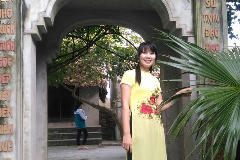
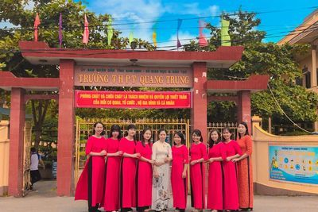
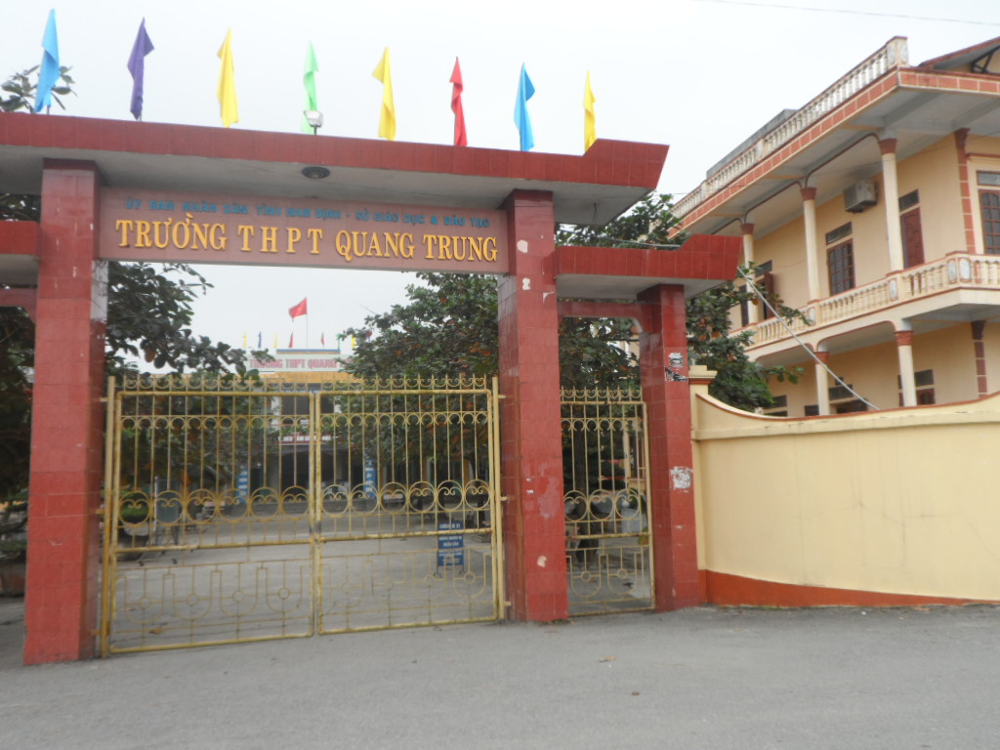
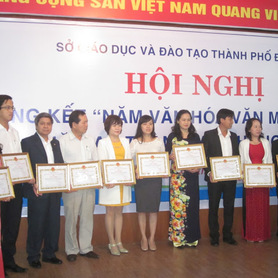
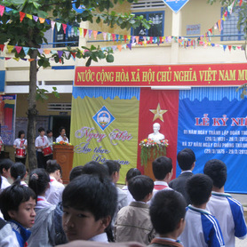

4. Một số hình ảnh của trường
 
Trường THPT Quang Trung có chức năng đào tạo trình độ phổ thông; phát hiện những học sinh có tư chất thông minh, đạt kết quả xuất sắc trong học tập và phát triển năng khiếu của các em về một trong các môn Toán học, Tin học, Vật LÝ, Hóa học, Sinh học và tiếng Anh; giáo dục học sinh thành người có lòng yêu nước, tinh thần vượt khó, tự hào, tự tôn dân tộc; có khả năng tự học, nghiên cứu khoa học và sáng tạo; có sức khỏe tốt để tiếp tục đào tạo thành nhân tài đáp ứng yêu cầu phát triển đất nước
Đây là ngôi trường cấp 3 đầu tiên của một huyện nghèo, điều kiện kinh tế xã hội khó khăn nhưng giàu truyền thống cách mạng, hiếu học, cần cù, sáng tạo. Kế thừa và phát huy truyền thống, 15 năm qua các thế hệ thầy và trò nhà trường luôn vượt qua mọi khó khăn, nỗ lực phấn đấu kiên trì thực hiện có hiệu quả đường lối, chủ trương, chính sách phát triển giáo dục của Đảng, Nhà nước; từng bước phát triển về mọi mặt, đạt được nhiều thành tích đáng khích lệ, góp phần không nhỏ cho sự phát triển kinh tế - xã hội của huyện Nam Trực, và địa bàn lân cận. Từ ngày thành lập đến nay, theo yêu cầu của từng giai đoạn lịch sử, trường đã qua ba lần đổi tên và bốn lần chuyển địa điểm. Quy mô trường, lớp không ngừng được mở rộng. Khóa học đầu tiên trường tuyển được 4 lớp với 163 học sinh, đến nay con số đó đã tăng lên ổn định 27 lớp với trên 1000 học sinh; công bằng xã hội trong tiếp cận giáo dục có nhiều tiến bộ. Từ mái trường này nhiều thế hệ học sinh ra trường và thành đạt trên mọi lĩnh vực công tác. Nhiều học sinh ưu tú đã và đang giữ các cương vị trọng trách trong các cơ quan Đảng, chính quyền, các tổ chức chính trị - xã hội, lực lượng vũ trang từ Trung ương đến địa phương.
Nhà trường luôn coi trọng việc phát triển đội ngũ; Không ngừng đẩy mạnh công tác bồi dưỡng, tự bồi dưỡng, gắn kết với việc thực hiện có hiệu quả các cuộc vận động, phong trào thi đua, từng bước nâng cao chất lượng đội ngũ nhà giáo và cán bộ quản lý nhà trường đảm bảo đủ về số lượng, chuẩn hóa về chất lượng, đồng bộ về cơ cấu bộ môn. Năm học 2021 - 2022 trường có 68 cán bộ, giáo viên. 100% giáo viên đạt chuẩn nghề nghiệp, trong đó số lượng trên chuẩn chiếm 22.1%. Nhiều năm qua, chất lượng giáo dục toàn diện, chất lượng mũi nhọn của nhà trường ổn định và có chuyển biến theo hướng tích cực. Trong 5 năm học gần đây, chất lượng thi tốt nghiệp THPT luôn xếp thứ hạng cao, với trên 80% học sinh trúng tuyển Đại học. Chất lượng thi học sinh giỏi xếp tốp 3 trong khối THPT không chuyên của tỉnh, trong đó có 02 giải Quốc gia. Những cuộc thi khác như Sáng tạo thanh thiếu niên nhi đồng; Nghiên cứu KHKT dành cho học sinh trung học trường đều có học sinh đạt các giải ở cả cấp tỉnh và cấp Quốc gia. Nhìn lại chặng đường 15 năm xây dựng và phát triển, trong từng giai đoạn lịch sử, dù ở bất kỳ hoàn cảnh nào, dưới sự lãnh đạo của các cấp ủy Đảng, chính quyền và của ngành Giáo dục, sự quan tâm chăm lo của toàn xã hội, đặc biệt sự cố gắng không ngừng của các thế hệ nhà giáo, cán bộ quản lý nhà trường với tấm lòng tất cả vì học sinh thân yêu, Trường THPT Quang Trung đã đạt được những thành tích to lớn góp phần quan trọng trong việc đào tạo nguồn nhân lực, thực hiện các mục tiêu phát triển kinh tế - xã hội của địa phương. Ghi nhận những thành tích đạt được, tập thể, cán bộ quản lý, giáo viên nhà trường đã được Đảng, Nhà nước, ngành Giáo dục, các tổ chức chính trị - xã hội tặng thưởng nhiều danh hiệu thi đua, hình thức khen thưởng cao quý. Nhiều năm liên tục nhà trường đạt danh hiệu tập thể lao động xuất sắc, được Chủ tịch nước tặng thưởng Huân chương Lao động hạng Nhất, được Chính phủ, UBND tỉnh tặng Cờ thi đua...Trường THPT Thanh Thủy trở thành một trong những lá cờ đầu của khối THPT của tỉnh Nam Trực, từng bước khẳng định được thương hiệu, điểm đến học tập, rèn luyện đáng tin cậy của con em nhân dân địa phương. Bước sang giai đoạn mới, đứng trước thời cơ và thách thức trong việc thực hiện những yêu cầu về đổi mới căn bản, toàn diện GD&ĐT theo tinh thần Nghị quyết số 29-NQ/TW, vị trí, vai trò và trách nhiệm của nhà trường lại càng lớn lao. Với sự đoàn kết, năng động, sáng tạo, ý thức trách nhiệm của thầy và trò, tinh thần hiếu học của con em địa phương, cùng với truyền thống vẻ vang qua hơn nửa thế kỷ sẽ là động lực to lớn thúc đẩy sự nghiệp giáo dục của Trường THPT Quang Trung phát triển, hoàn thành sứ mạng lịch sử của mình trở thành trường trung học có chất lượng trọng điểm, góp phần xứng đáng vào sự nghiệp GD&ĐT trên quê hương Đất Tổ.
